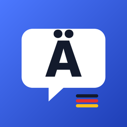

Privacy Policy
Who is responsible
Learn German is developed by Yiming Cheng, Munich, Germany. Contact: yimingcheng@gmail.com
Data we collect
None. The developer does not receive, store or have access to any information about you or how you use the app. The app contains no advertising, analytics or third-party tracking code.
Data stored on your device
- Learning progress – completed lessons, test results, review schedule, study days and settings.
- Profile – the name you enter and, if you choose one, a profile photo. The photo is picked with Apple's photo picker; the app only sees the photo you select, and it is stored on your device only.
- Voice recordings – if you record yourself for practice, the recordings are saved on your device only and are never uploaded.
iCloud sync
If you are signed in to iCloud, your learning progress, review schedule, settings and profile name are synced between your own devices using Apple's iCloud key-value storage. This data is stored in your personal iCloud account under Apple's privacy policy; the developer cannot access it. Profile photos and voice recordings are not synced.
Microphone and speech recognition
The microphone is used only when you start pronunciation practice or a recording. Pronunciation is checked with Apple's speech recognition. Where possible this happens on your device; if on-device recognition is not available, the audio may be processed by Apple according to Apple's privacy policy. The developer never receives your audio.
Children
The app is suitable for all ages and collects no data from anyone, including children.
Deleting your data
You can reset your progress in the app's settings. Deleting the app removes all data stored on the device. Synced progress can be removed by turning off iCloud for the app in the iOS Settings app, or by resetting progress in the app while iCloud is on.
Your rights
Because no personal data is collected or processed by the developer, there is no data we can provide, correct or delete. If you have questions, please contact yimingcheng@gmail.com.
Changes
If this policy changes, the new version will be published on this page with a new effective date.